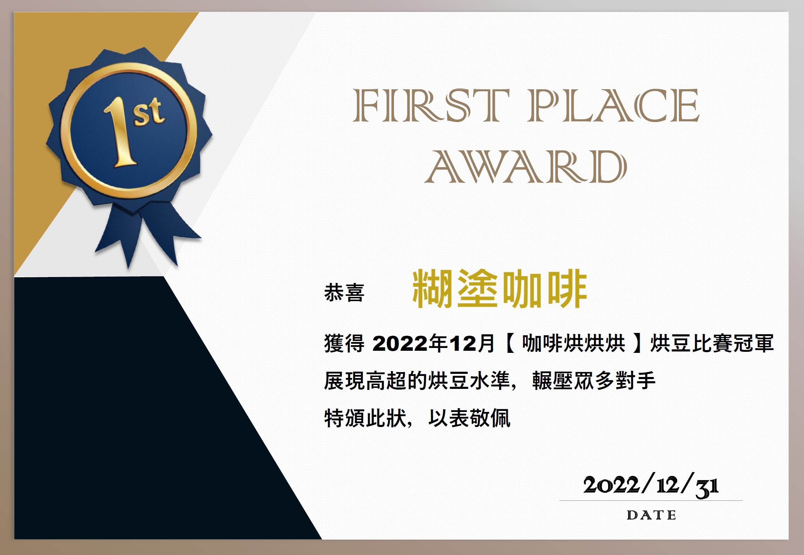

糊塗咖啡 HUTU CAFE 由烘豆師牛頓王創立。我們將看似感性的咖啡烘焙，注入嚴謹客觀的科學精神。
透過精準的數據分析，掌握每一批次生豆的含水量、水活性與生豆密度，並為高海拔精品豆種量身打造專屬的烘焙曲線。這份對烘焙的嚴謹與熱忱，不僅讓烘豆師取得 SCA 國際精品咖啡協會專業級烘焙認證 (CSP Roasting Professional)，更在 Coffee Review 評鑑屢獲 93、94 卓越高分，並一舉奪得 2022 咖啡烘烘烘年末賽冠軍。我們堅持職人手作的極致，確保每一鍋咖啡豆都能完美釋放其獨特的風土潛力與純粹風味。
糊塗咖啡秉持對品質的堅持，參與全球最具指標性的咖啡評鑑權威機構 Coffee Review，送測的 6 款咖啡皆榮獲卓越高分肯定，讓台灣的烘焙實力被世界看見。
Ethiopia Banko Gotiti
佛手柑與柑橘香氣，伴隨檸檬草與可可，酸值明亮，口感絲滑。
Blossom Spring Blend
黑莓與香草優格香，帶有洛神花風味，酸度明亮多汁，層次複雜。
Ethiopia Halo Hartume
明亮水仙花與杏桃香氣，點綴可可與檸檬皮，酸甜平衡，糖漿般滑順。
Kenya Rumukia FCS Maganjo
黑醋栗與紫羅蘭香氣，帶有檸檬馬鞭草與可可，酸度活潑，口感柔順。
Autumn Forest
黑櫻桃與黑巧克力香，伴隨薰衣草與柑橘皮，果酸明亮，口感飽滿。
Passion Paradise
覆盆子與水仙花香，結合黑巧克力與葡萄柚皮，酸甜多汁，尾韻細緻。
糊塗咖啡烘豆師已正式取得 SCA CSP Roasting Professional（咖啡烘焙專業級）證照。這是國際精品咖啡協會（SCA）認證的最高烘焙等級。
該認證課程深入探討烘焙科學（如物理/化學變化、梅納反應與熱力學），並涵蓋高階烘焙曲線設計、不同烘焙技法精進、瑕疵修正及商業化量產管理。透過嚴謹的理論與實作考驗，展現我們對高階烘豆知識與極致風味的專業掌握。

糊塗咖啡的烘豆師透過科學化分析與敏銳的感官杯測，在激烈的咖啡烘焙賽事中屢創佳績，以實力證明我們對完美風味的追求。
- 咖啡烘烘烘 2022 年末賽 —— 榮獲 冠軍
- 咖啡烘烘烘 2022 10月例賽 —— 榮獲 第六名
